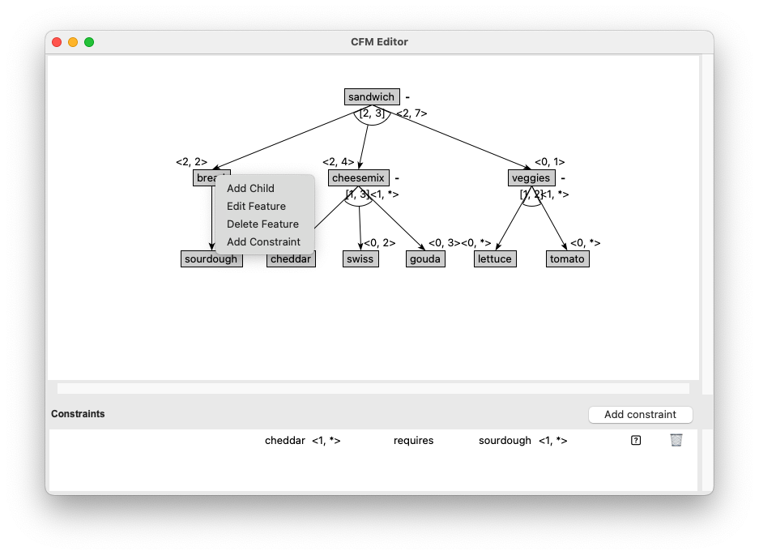
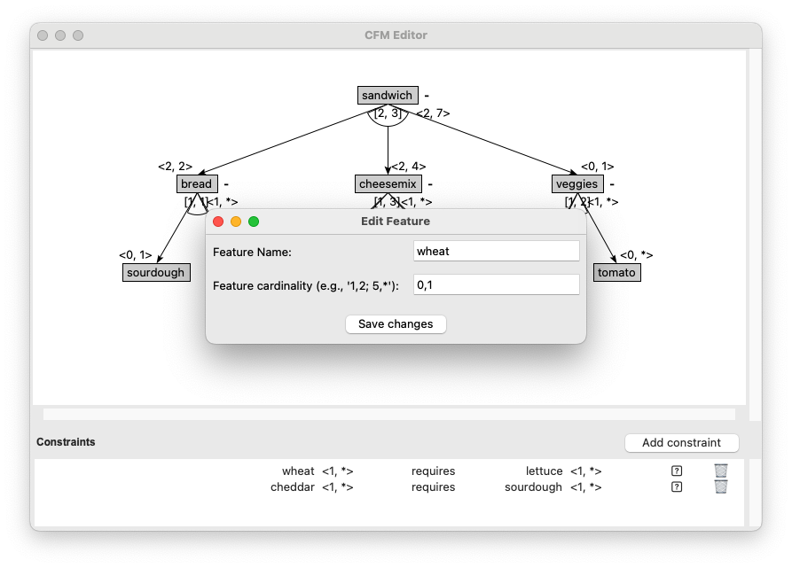

To edit a feature in your feature model using the CFM Toolbox Editor, follow these steps:
1. Right-Click on the Feature
Locate the feature in the editor that you want to edit. Right-click on the feature to open the context menu. 
2. Select "Edit Feature" from the Menu
From the context menu, select the option "Edit Feature". This will open the edit dialog.
3. Modify Feature Details
In the edit dialog, you can change the following:
- Name: Update the name of the feature. Ensure the new name is unique and does not conflict with existing feature names.
- Cardinality: Adjust the cardinality values (e.g., 1..1, 0..*, etc.) as needed.
Click "Save Changes" to confirm your changes. In the edit dialog, you can change the following:
- Name: Update the name of the feature. Ensure the new name is unique and does not conflict with existing feature names.
- Cardinality: Adjust the cardinality values (e.g., 1..1, 0..*, etc.) as needed. Click "Save Changes" to confirm your changes.

Notes
Unique Name: The feature name must be unique within the model. If the name already exists, you will be prompted to choose a different name.
Constraints Update: If the feature is involved in any constraints (e.g., cross-tree constraints), these constraints will be automatically updated to reflect the changes. Ensure the updated constraints still align with your model's requirements.
Undo: If you make a mistake, you can use the Undo option (Ctrl+Z or Cmd+Z) to revert the changes.
Example
Here’s an example of how the feature tree might look before and after deleting a feature:
Before
After Editing "Feature A" to "Feature X" with Cardinality 0..1: